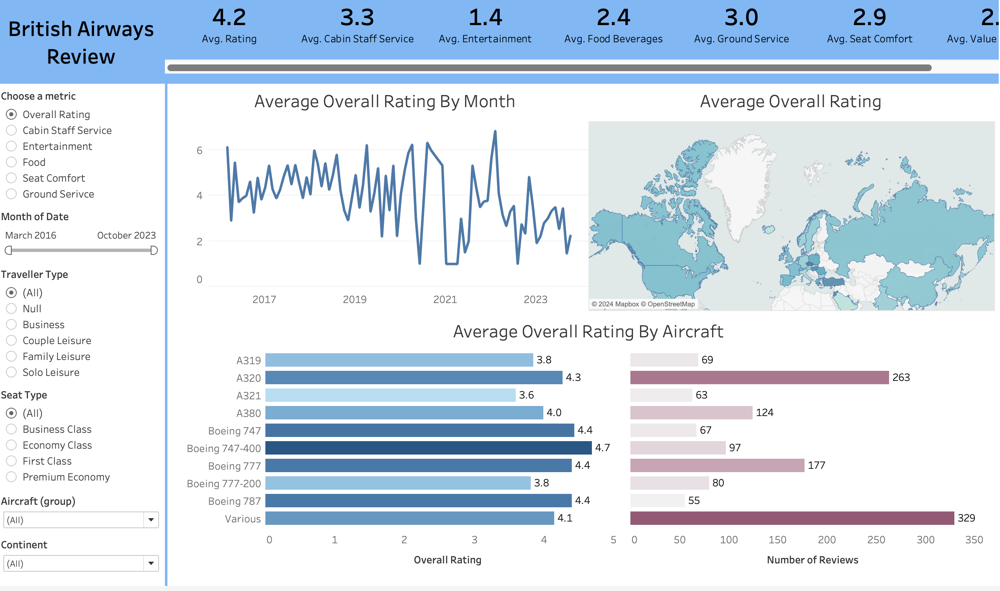
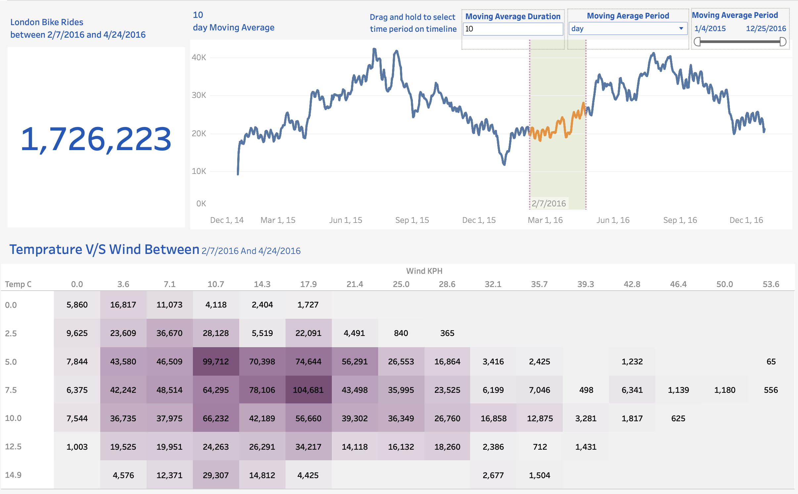
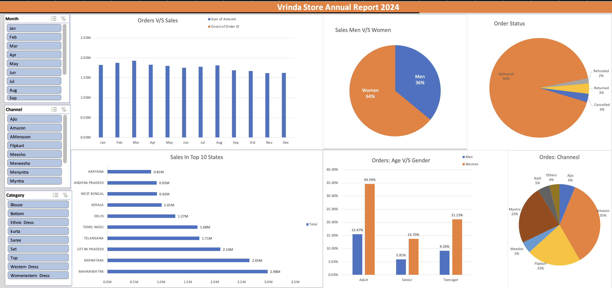

I am a dedicated and enthusiastic data analyst with a strong foundation in SQL, business intelligence tools, Excel, and Python. My passion for data-driven decision-making allows me to transform complex data into actionable insights, driving operational efficiency and strategic growth. With a keen interest in leveraging technology to solve real-world problems, I am committed to continuously developing my skills and staying at the forefront of data analytics trends and best practices..

In this Tableau project, I analyzed British Airways customer reviews, focusing on key service metrics such as seat comfort, cabin staff service, and overall satisfaction. The data was visualized to highlight trends across different flight routes, traveler types, and aircraft models. The project provides insights into areas for service improvement and customer experience enhancement.

In this Tableau project, I analyzed London bike ride data, focusing on factors like temperature, weather conditions, and holidays. The project visualizes trends in bike usage across different times, highlighting the impact of external conditions on ridership patterns.

This project involved creating an Excel dashboard to analyze sales data, focusing on key metrics such as total sales, product performance, and regional distribution. The dashboard provides insights into sales trends, helping drive data-driven decision-making for improved business outcomes.

This project focuses on detecting fraudulent transactions in a large banking dataset using advanced SQL queries. The dataset, sourced from Kaggle, contains transaction details such as origin and destination accounts, transaction amounts, balances, and fraud indicators. We use SQL techniques like recursive CTEs, window functions, subqueries, and complex joins to identify suspicious activity and validate transaction consistency..